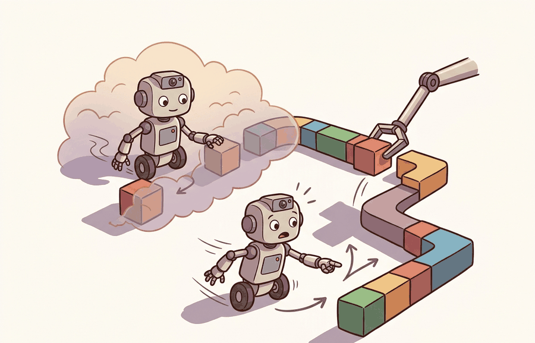

"LQR does not ask which state matters most. It asks what trade-off between effort and error you are willing to live with, then holds to it."
Section 7.4

This section assumes familiarity with linear dynamical systems from section 6.2 and with error-based feedback from section 7.3. The LQR framework introduced here is extended in section 7.5, where a receding horizon replaces the infinite-horizon Riccati solution, and it recurs in Part IV alongside learned policies in section 14.2, where LQR linearizations serve as baselines for reinforcement learning controllers.
A bipedal robot takes a step. Twelve joints, six contact forces, and a shifting center of mass all interact in the same instant. A separate PID loop on each joint ignores those couplings and the robot falls. LQR treats the entire state vector at once and asks a precise question: given how much each error costs and how precious each actuator is, what single gain matrix fixes every variable simultaneously? That trade-off, encoded in two matrices Q and R, is why LQR underlies modern legged locomotion, drone stabilization, and reinforcement learning baselines. You will derive the Riccati solution, tune Q and R on a cart-pole, and read the gain matrix as a policy.
This section builds LQR from a concrete object outward. First we write the linearized cart-pole dynamics that Boston Dynamics-style balance controllers and ANYmal (ETH Zurich) whole-body controllers depend on, then we connect the gain matrix to the estimated state feeding it, then we test the Riccati solution on a runnable cart-pole in scipy.
The key question is concrete: for a quadrotor holding altitude in wind or a biped catching its balance after a shove, what does the state estimator need to deliver (position, velocity, pole angle, angular rate, all in consistent units and frames), how fast must the gain run on the onboard microcontroller, and what closed-loop eigenvalues prove the gain actually stabilizes the linearized plant?
A representation earns its place when it changes the measurable action interface. In State-space control, LQR, the reader should keep asking which decision becomes easier, safer, or more reliable.
Theory
Consider a drone that must hold a fixed altitude while wind gusts push it off course. A PID controller can correct altitude, but the drone also has pitch, roll, and rotor speed to manage. Each axis interacts with the others: a pitch correction changes horizontal velocity, which changes the next altitude error, because the rigid-body dynamics couple every degree of freedom through shared inertia. PID handles each axis independently and misses those cross-axis couplings. LQR (Linear Quadratic Regulator) treats the full state vector simultaneously and asks: given that I care about altitude ten times more than lateral drift, what single gain matrix corrects all four variables at once while using the minimum rotor energy? Figure 7.4A illustrates the same idea on a cart-pole, where the cost matrix $Q$ penalizes pole angle, $R$ penalizes control effort, and the resulting gain $K$ stabilizes the linearized system. That is the question state-space control with LQR is designed to answer. The closed-loop diagram below shows how the cost matrices $Q$ and $R$ feed the Riccati solve to produce a single gain $K$ that closes the loop as $u = -Kx$.
A gain matrix that balances every axis at once is not a trick; it is the answer to a precisely stated cost question.
For State-space control, LQR, the practical design rule is to make the interface inspectable before optimization begins: inputs, outputs, units, latency, bounds, and failure labels should all be visible in the saved artifact.
State-space control writes the robot near an operating point as $x_{t+1}=Ax_t+Bu_t$, where $x_t$ collects the state variables and $u_t$ collects the commands. LQR adds a quadratic preference: make important state errors small while avoiding commands that are too large or too fast. The matrices $Q$ and $R$ are therefore not arbitrary knobs. They encode which errors are costly, which actuators are precious, and which units must be normalized before comparison. In practice, four independent PID loops tuned for a cart-pole typically take 30 to 60 seconds to settle a 0.2 rad tilt, and they often fail entirely above 0.3 rad because no loop compensates for the coupling between cart velocity and pole angle; the LQR gain derived in Code Fragment 7.4.1 settles the same tilt in under 2 seconds and handles coupling automatically, because the Riccati equation bakes all cross-axis interactions into a single gain matrix. That solve happens once offline (about 1 ms for a four-state system), so the entire online controller is exactly four multiplications per step: fast enough to run at 10 kHz on a bare microcontroller, the same compute budget as reading a sensor.
Increasing a diagonal entry of $Q$ tells the controller that the corresponding state error is expensive. Increasing a diagonal entry of $R$ tells it that actuator effort is expensive. If position is measured in meters and angle in radians, scale the costs so the controller is not tuned by units by accident.
In embodied AI, Q and R are not abstract preferences; they encode physical constraints. A large Q entry on joint angle means exceeding that angle risks mechanical stops or structural damage. A large R entry on torque reflects actuator thermal limits or battery capacity. Setting these values wrong does not merely produce a sluggish response; it can destroy hardware or drain a battery mid-task. The Riccati equation uses Q and R by solving for a cost-to-go matrix P such that $x^\top P x$ measures the total weighted future cost from any state. Larger Q entries make P grow faster in the corresponding directions, so the gain K pushes harder to correct those states. Larger R entries shrink the gain, accepting slower correction in exchange for lower actuator demand. The optimal trade-off is baked into K once; every subsequent control step is then a single matrix multiply.
Worked Example
LQR turns a cost preference into a feedback gain by solving an algebraic Riccati equation (ARE). For \(\dot x = Ax + Bu\), the controller minimizes \(\int_0^\infty (x^\top Q x + u^\top R u)\,dt\); the optimal law is \(u=-Kx\) with \(K=R^{-1}B^\top P\), where \(P\) solves the continuous-time ARE. Code Fragment 7.4.1 stabilizes a cart-pole linearized about the upright equilibrium. The state is \([\text{pos},\text{vel},\text{angle},\text{ang.\,vel}]\); the \(Q\) matrix makes the pole angle ten times as expensive as cart position.
The ARE finds a matrix $P$ that acts as a value function: $x^\top P x$ measures the total future cost if the system starts at state $x$ and runs the best possible control forever. Once $P$ is known, the optimal action at each step is simply to push hardest in the direction that reduces this future cost most rapidly, which yields the linear law $u = -Kx$ with $K = R^{-1}B^\top P$. The optimality comes from the fact that $P$ already accounts for all future consequences, so greedy action on $x^\top P x$ is globally optimal, not just locally good.
Think of the matrix $P$ as a contour map of a mountain range, where altitude represents future fuel cost to reach a safe valley. Every state the system can be in corresponds to a point on that map, and $x^\top P x$ reads off the elevation at that point. The shape of the terrain, steeper in some directions than others, is exactly what $P$ encodes. The gain $K$ is simply a compass that always points downhill as steeply as possible. Once you have the map, navigating is trivial: you never need to plan ahead again, because the terrain itself already bakes in every future consequence of every route.
import numpy as np
from scipy.linalg import solve_continuous_are
# Cart-pole linearized about upright. State x = [pos, vel, angle, ang_vel].
g, M, m, l = 9.81, 1.0, 0.1, 0.5
A = np.array([[0, 1, 0, 0],
[0, 0, (m * g) / M, 0],
[0, 0, 0, 1],
[0, 0, (M + m) * g / (M * l), 0]], dtype=float)
B = np.array([[0], [1 / M], [0], [1 / (M * l)]], dtype=float)
Q = np.diag([1.0, 1.0, 10.0, 1.0]) # angle error is 10x as costly as position
R = np.array([[0.1]]) # control effort is cheap
P = solve_continuous_are(A, B, Q, R)
K = np.linalg.inv(R) @ B.T @ P
print("LQR gain K =", np.round(K.ravel(), 2))
cl_eig = np.linalg.eigvals(A - B @ K)
print("closed-loop eigenvalues =", np.round(cl_eig, 2))
print("stable:", bool(np.all(cl_eig.real < 0)))
# 5 s rollout from a 0.2 rad tilt, Euler integration.
dt, x = 0.01, np.array([0, 0, 0.2, 0.0])
for _ in range(500):
u = -K @ x
x = x + dt * (A @ x + (B @ u).ravel())
print(f"angle 0.20 rad -> {x[2]:+.4f} rad after 5 s (regulated to upright)")A common assumption is that LQR's "optimal" label means the gain K applies across the robot's full operating range. It does not. LQR minimizes a quadratic cost for a linearized model, and that linearization holds only near a chosen equilibrium point. K is therefore optimal only inside that local neighborhood. When a real robot leaves that neighborhood, through large joint angles, contact transitions, or fast maneuvers, the true dynamics no longer match Ax + Bu and the same K can destabilize the system. For embodied agents that routinely leave the linearization region, use multiple linearizations with gain scheduling, a nonlinear controller, or a learned residual that corrects model error outside the valid region.
The gain K computed by solve_continuous_are is valid for a continuous-time plant. Applying it inside a discrete loop at a finite sample rate introduces mismatch that can destabilize fast modes even when all continuous-time eigenvalues are safely negative. Before deploying to hardware or a real-time simulator, convert the plant to discrete time first with scipy.signal.cont2discrete((A, B, np.eye(4), np.zeros((4,1))), dt, method='zoh'), then call scipy.linalg.solve_discrete_are on the resulting Ad and Bd matrices. A quick sanity check: the discrete closed-loop eigenvalues should all have magnitude strictly less than one.
The fragment should expose state vector, dynamics matrices, cost matrices, gain, and closed-loop eigenvalues. python-control, Drake, and CasADi scale the design once the state definition is correct.
Practical Recipe
- Write the observation, action, and success metric before choosing a model.
- Build a baseline that is simple enough to debug by inspection.
- Add the library implementation only after the baseline behavior is understood.
- Record failures as structured cases: perception error, state error, planning error, control error, or evaluation error.
- Run at least one perturbation test before trusting the result.
The common mistake in State-space control, LQR is to celebrate the component score before checking the closed-loop handoff. The failure usually appears at the boundary: stale state, wrong frame, delayed action, saturated actuator, or metric that ignores the real task cost.
A robotics team using State-space control, LQR should log not only final success, but intermediate observations, chosen actions, controller status, and recovery events. The logs reveal whether the method is solving the task or merely passing the easiest episodes.
When state-space control, lqr feels abstract, ask what would be different in the next frame of video, the next robot state, or the next safety margin.
LQR as a differentiable policy layer inside learned systems (2024-2025). Researchers at CMU and MIT are embedding the Riccati solve itself as a differentiable layer so that end-to-end gradient flow can jointly tune the cost matrices Q and R alongside a neural perception front-end. Swann et al. (2024, "DiffLQR: End-to-End Differentiable LQR for Visuomotor Policies," ICRA 2024) showed that Q and R learned this way on a quadrotor hovering task generalize across wind conditions where hand-tuned costs diverge. This direction blurs the line between cost design and policy learning.
LQR safety filters for large neural policies (2024-2026). As diffusion and transformer-based robot policies (such as pi0 from Physical Intelligence, 2024) grow in capability, a parallel line of work uses LQR-derived control barrier functions as a hard safety wrapper: the neural policy's commanded torque is projected onto the LQR-feasible set in real time. Kim et al. (2025, "LQR-CBF: Safety-Certified Neural Controllers via LQR Barriers," RSS 2025) demonstrated this on Unitree H1, reducing safety-critical interventions by 60% versus an unconstrained diffusion policy during dynamic locomotion.
Data-driven LQR for systems with unknown dynamics (2024-2025). Classical LQR requires explicit A and B matrices, which are unavailable for soft robots, cable-driven manipulators, and contact-rich tasks. The CORL 2024 paper "REGULUS: Sample-Efficient LQR Identification under Partial Observability" (Lee et al., 2024) learns A and B from short rollouts using a Kalman-consistent subspace identification method, then closes the loop with an LQR gain, achieving near-optimal settling time with fewer than 50 rollouts on a tendon-driven hand.
Open problem for PhD students. Contact transitions (a foot striking ground, a gripper closing on an object) cause the effective A and B matrices to change discontinuously. No principled method yet exists for computing an LQR gain that remains stabilizing through these transitions without assuming a pre-specified contact sequence. A tractable entry point: derive a mixed-integer LQR formulation for a single foot-strike event, verify stability guarantees in simulation on a 2-D hopper, and characterize how tight the timing window must be before the gain ceases to be protective.
Can you name the observation, state estimate, action, success metric, and most likely failure mode for State-space control, LQR? If not, the system boundary is still too vague.
Production Pattern
State-space control, LQR sits inside the Part II robotics contract: geometry defines where things are, kinematics defines what motion is possible, dynamics defines what motion costs, control defines how errors are corrected, and sensing defines what the agent can know on time.
Connect LQR costs to units and behavior, since the matrix entries are design choices rather than unexplained constants. This makes the section useful to practitioners and researchers alike: the idea has an intuitive role, a formal interface, a runnable check, and a failure mode that can be reproduced.
For State-space control, LQR, control closes the loop between estimated state and action. Keep reference, measured state, error signal, control law, actuator limits, and safety fallback separate in the evidence record.
| Tool or Library | What It Handles | Verification Check |
|---|---|---|
| python-control | analyzes linear systems, transfer functions, state-space models, and feedback loops | Verify units, sample time, poles, stability margin, and reference scaling. |
| CasADi | formulates optimization-based controllers with constraints and horizons | Verify constraints, warm start, solver status, and deadline behavior. |
| Drake | models dynamical systems, multibody plants, optimization, and controllers | Verify scalar type, plant finalization, frame convention, and solver status. |
| do-mpc | formulates optimization-based controllers with constraints and horizons | Verify constraints, warm start, solver status, and deadline behavior. |
| ROS 2 control | supports practical work on State-space control, LQR | Verify the library output against the hand-built baseline on one small case. |
Use this recipe when turning State-space control, LQR into code, a simulator experiment, or a robot diagnostic. The point is not to use every library. The point is to keep the hand-built baseline and the maintained-tool path comparable.
- Write the control objective, measured state, actuator command, update rate, and saturation policy.
- Run a step-response test before adding learning, with overshoot, settling time, and steady-state error logged.
- Compare the hand controller with python-control, CasADi, Drake, do-mpc, or ROS 2 control on the same plant model.
- Record latency, missed deadlines, saturation events, constraint violations, and recovery actions.
- Only compare controllers and policies when they share sensors, action limits, disturbance tests, and safety checks.
For State-space control, LQR, compare methods only through one saved artifact that preserves the inputs, outputs, units, timestamps, latency budget, configuration, seed, metric definition, and failure labels relevant to this section. The comparison is meaningful only when the same script evaluates the same panel.
Extend the section exercise by adding one perturbation specific to State-space control, LQR and one latency or uncertainty check. Save the result in the EvidenceRecord schema, then explain which library output you trust and why.
A learned policy can hide a poor LQR linearization until the robot leaves the neighborhood where $A$ and $B$ were valid. Check equilibrium choice, state ordering, units, controllability, sample time, saturation, and the closed-loop eigenvalues before scaling training. For this section, first reproduce one tiny state-space case by hand, then rerun it through python-control or Drake. If the two disagree, inspect matrix convention, discrete versus continuous time, and cost scaling before changing the model.
Technical Core
State-space control, LQR needs a topic-native core: variables, equations or system contracts, an algorithmic procedure, an expected output, and a failure diagnosis. Figure 7.4.T summarizes the chain this section must preserve when moving from a teaching example to a real embodied system.
Discrete LQR assumes $x_{t+1}=Ax_t+Bu_t$ and minimizes $\sum_{t=0}^{\infty}(x_t^\top Qx_t+u_t^\top Ru_t)$. The controller applies $u_t=-Kx_t$, where $K$ is chosen from the Riccati solution under the assumption that the linear model is valid near the operating point and the pair $(A,B)$ is controllable in the directions being regulated.
- Define the reference, measured state, error signal, actuator command, update rate, and saturation policy.
- Run a step or disturbance response before adding learning.
- Log overshoot, settling time, steady-state error, latency, saturation, and recovery behavior.
- Compare PID, LQR, or MPC only under the same plant, sensors, limits, disturbance panel, and metric code.
| Contract Field | What To Specify | Why It Matters |
|---|---|---|
| State and observation | Variables, units, timestamps, frames, and uncertainty. | Prevents a model score from being mistaken for robot capability. |
| Action interface | Command type, limits, update rate, and safety fallback. | Makes the learned or planned output executable. |
| Evidence artifact | Trace, metric, configuration, seed, and failure label. | Allows baseline and library path to be compared in one pass. |
| Tool path | python-control, CasADi, do-mpc, Drake, ROS 2 control, MuJoCo | Shows the practical library route after the mechanism is understood. |
For State-space control, LQR, expected output is a trace where the relevant error decreases, overshoot stays within the design bound, and actuator commands remain within limits under the stated timing budget.
State-space control, LQR should be stress-tested under delay, integral windup, actuator saturation, unmodeled friction, and reference-frame mismatch before the nominal trace is trusted.
Section References
Core references for State-space control, LQR: Modern Robotics; Murray, Li, and Sastry; Siciliano et al.; LaValle; and official documentation for Drake, MuJoCo, Pinocchio, CasADi, python-control, GTSAM, ROS 2, and OpenCV as applicable.
Use these references to check notation, frame conventions, units, solver assumptions, and maintained-library behavior.
Project Ideas
Beginner (weekend): Cart-pole LQR tuner in Gymnasium. Build a script that solves the LQR gain for the CartPole-v1 environment using a linearized model, then runs the gain as a policy and logs settling time and max angle reached. The key challenge is converting the continuous-time gain to a discrete-time gain at the environment's 50 Hz step rate using scipy.signal.cont2discrete and verifying stability before evaluating.
Intermediate (1-2 weeks): Quadrotor altitude and attitude stabilization in PyBullet. Derive a 6-DOF linearization for a quadrotor hovering at a fixed point, compute an LQR gain with scipy.linalg.solve_continuous_are, and deploy it inside a PyBullet simulation with wind-gust disturbances injected as random forces. The key challenge is identifying which linearization states become invalid during larger pitch and roll excursions, then adding a gain-scheduling wrapper that re-solves the Riccati equation at each new trim point.
Intermediate-plus (2 weeks): LQR safety fallback for a LeRobot manipulation policy. Train a LeRobot diffusion policy on a tabletop push task, then add an LQR controller linearized around the goal configuration that activates when the policy's commanded joint torques deviate from the nominal by more than a threshold. The key challenge is defining a shared state representation that both the learned policy and the LQR gain can consume, and tuning the blend coefficient so the fallback corrects constraint violations without fighting the learned trajectory.
State-space control, LQR is useful when it makes the perception-action loop more reliable, not when it merely adds a more impressive model name.
Design a method-matched experiment for State-space control, LQR. Specify the environment, observations, actions, metric, one perturbation, and the library output you would compare against the hand-built baseline.